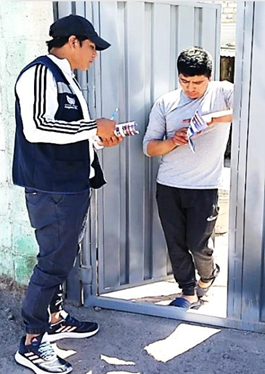
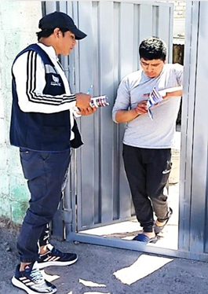
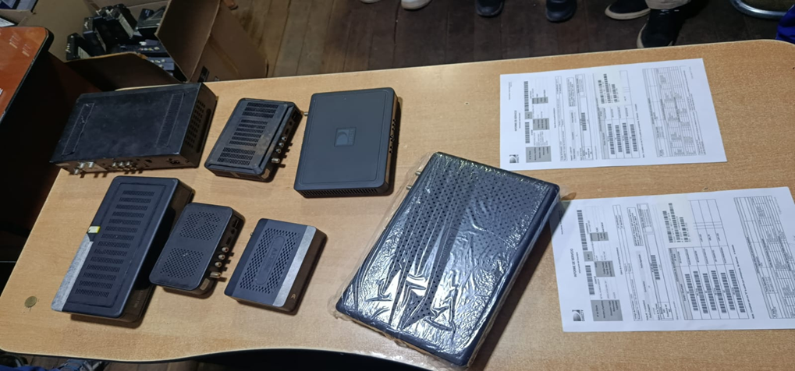
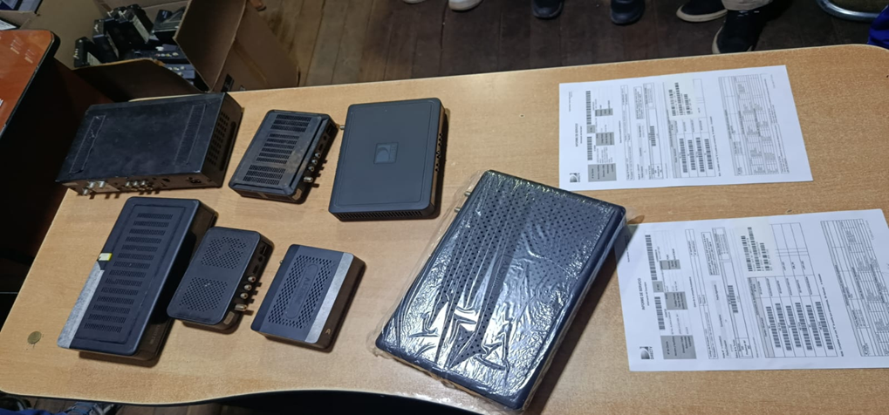

UNIVERSIDAD PERUANA UNIÓN
Facultad de Ingeniería y Arquitectura
Escuela Profesional de Ingeniería de Sistemas
Análisis Organizacional de TECNOLOGIA & DISTRIBUCIONES ANGELES E.I.R.L
Desarrollando la planificación estratégica y el Balanced Scorecard (BSC)
INTRODUCCIÓN
El sector de telecomunicaciones en el Perú ha experimentado un notable crecimiento en los últimos años, siendo uno de los rubros con mayor dinamismo por la expansión de la cobertura tecnológica, la demanda creciente de servicios de conectividad y entretenimiento, y la necesidad de adaptarse a clientes cada vez más exigentes. En este contexto competitivo, la empresa Tecnología & Distribuciones Ángeles E.I.R.L. se ha consolidado como un agente autorizado de DIRECTV , operando con un enfoque regional en el sur del país.
El presente documento tiene como objetivo realizar un análisis organizacional de la empresa, con el fin de sentar las bases para su planificación estratégica y el diseño de un Cuadro de Mando Integral (Balanced Scorecard - BSC). Se inicia con una descripción de sus aspectos generales, considerando su reseña histórica, ubicación, locales, identidad institucional, personal, mercado, proveedores y principales productos y servicios. Esta contextualización permitirá comprender mejor las fortalezas de la organización y los retos que enfrenta en su entorno.
1 ASPECTOS GENERALES DE LA EMPRESA
1.1 Reseña Histórica de la empresa
Tecnología & Distribuciones Ángeles E.I.R.L. fue constituida el 11 de abril del año 2011 en la ciudad de Juliaca, Puno, bajo la modalidad de Empresa Individual de Responsabilidad Limitada (E.I.R.L.). Su nacimiento no solo respondió a la necesidad de formalizar operaciones comerciales, sino también a aprovechar el dinamismo económico de Juliaca, reconocida como la capital económica de la región sur del Perú debido a su intensa actividad comercial y su estratégica ubicación como punto de conexión entre Puno, Arequipa, Cusco y la frontera con Bolivia.
Desde su fundación, se estableció como agente autorizado de DIRECTV, enfocando su operación en la comercialización de servicios de televisión satelital, internet de fibra óptica (DFibra) y soporte técnico especializado.
Hitos Clave:
- Fundación y Liderazgo: La gestión se inició con la Sra. Ana Victoria Aguirre Zubieta como Gerente General y el Sr. Hugo Cama Tintaya como Gerente Comercial y de Operaciones, impulsando la expansión y formalización.
- Crecimiento Regional: Inicialmente, la empresa operaba en Puno, Cusco, Madre de Dios y Apurímac.
- Expansión Estratégica: En 2022 , gracias a la confianza de DIRECTV y una política de crecimiento continuo y calidad de servicio, la empresa expandió su cobertura a las regiones de Moquegua y Arequipa , consolidando su presencia en el mercado regional y nacional.
1.2 Ubicación Geográfica
La empresa opera bajo un modelo centralizado y descentralizado que optimiza su alcance geográfico y estratégico.
Domicilio Fiscal Central:
- Ubicación: Jr. San Martín N° 614 – Interior B, Cercado, Juliaca, San Román, Puno.
- Referencia Estratégica: Situada al costado de la Comandancia PNP.
- Ventaja: Esta ubicación central permite operar en una zona estratégica de alto valor , al estar cerca de centros administrativos y de alto tránsito comercial.
Modelo de Operación Descentralizado:
- La organización ha desarrollado un modelo de operación descentralizado con un total de 13 agencias distribuidas en distintos departamentos.
- Beneficio: Esta red de agencias facilita el acceso directo a clientes, cubriendo eficientemente tanto áreas urbanas como rurales.
1.3 Locales, filiales, Mapa de Lugares Geográficos
Tecnología & Distribuciones Ángeles E.I.R.L. no solo concentra sus operaciones en Juliaca, sino que ha logrado una expansión significativa en la macrorregión sur del país.
- En Juliaca una sucursal en Jr. San Martín N° 537.
- En Puno , la sede se ubica en Av. El Sol N° 280.
- En Cusco , las oficinas y depósitos se encuentran en Av. Tullumayo N° 768 y en la Urb. Cachimayo – Prolongación de la Cultura Mz C Lote 08.
- En Quillabamba , la dirección es Av. San Martín N° 615.
- En Madre de Dios , las agencias funcionan en Av. 02 de Mayo N° 849 y Av. León Velarde N° 543.
- En Abancay , la oficina está en Av. Díaz Bárcenas N° 1035.
- En Andahuaylas , la sede se encuentra en Jr. Juan Francisco Ramos N° 333.
- En Arequipa , la sede se encuentra en Jr. Juan Francisco Ramos N° 333.
- En Moquegua , la sede está en Calle Ancash N° 243.
Además, la empresa dispone de depósitos y almacenes en Cusco, Abancay, Madre de Dios, Arequipa y Moquegua, que respaldan la gestión logística y aseguran la disponibilidad de equipos y materiales necesarios para la prestación de servicios.
1.4 Marcas, emblemas y logotipos
La identidad visual de Tecnología & Distribuciones Ángeles está asociada directamente a DIRECTV, compañía de alcance global en telecomunicaciones. Este vínculo se refleja en el uso de emblemas y colores que transmiten confianza, formalidad y modernidad, reforzando la imagen de solidez de la empresa ante el mercado.
El logotipo de la organización cumple una doble función: proyectar una marca propia y, al mismo tiempo, resaltar la condición de agente autorizado de DIRECTV, lo cual le otorga respaldo frente a sus clientes. Así, la marca simboliza compromiso, experiencia y alineamiento con los estándares internacionales de su proveedor estratégico.
1.5 Número de trabajadores
La estructura organizacional actual refleja un equipo humano de aproximadamente 47 colaboradores, distribuidos en diversas áreas: gerencia general, gerencia comercial y operaciones, contabilidad, administración, recursos humanos, logística, almacenes, operaciones técnicas, supervisión y control.
El personal no solo cumple funciones operativas, sino que también desarrolla labores de coordinación, supervisión y soporte postventa. Esto demuestra un modelo de trabajo en red, donde cada área cumple un rol específico dentro de la cadena de valor, garantizando atención oportuna y un servicio diferenciado al cliente final.
1.6 Razón social y jurídica
La denominación formal de la empresa es:
TECNOLOGÍA & DISTRIBUCIONES ÁNGELES EMPRESA INDIVIDUAL DE RESPONSABILIDAD LIMITADA (E.I.R.L.)
- Tipo de empresa: Persona natural con negocio constituido como E.I.R.L.
- RUC: 20448311041.
- Fecha de inscripción: 05 de abril de 2011.
- Inicio de actividades: 11 de abril de 2011.
- Estado actual: Activo.
- Dependencia SUNAT: ITI Juliaca – MEPECO.
Esta forma societaria le otorga flexibilidad administrativa, preservando la responsabilidad patrimonial limitada del titular, a la vez que mantiene la formalidad y reconocimiento legal ante el Estado y sus proveedores.
1.7 Mercado que abastece
El mercado al que abastece la empresa está definido por el sector de las telecomunicaciones, con un enfoque en la distribución de servicios de televisión satelital e internet de fibra óptica. Sus clientes principales son:
- Hogares urbanos y rurales, interesados en acceso a TV de paga con cobertura confiable.
- Pequeños negocios y oficinas, que requieren paquetes de conectividad y entretenimiento adaptados a su operación.
La capacidad de atender tanto zonas rurales como urbanas constituye una ventaja estratégica, pues permite captar segmentos que, en muchos casos, no cuentan con alternativas tecnológicas de similar calidad.
1.8 Principales proveedores
El proveedor estratégico y principal de la empresa es DIRECTV, multinacional líder en el sector de televisión satelital y telecomunicaciones a nivel global. Esta relación no es meramente comercial, sino que se enmarca dentro de un vínculo de agencia autorizada, lo que significa que Tecnología & Distribuciones Ángeles E.I.R.L. representa oficialmente a DIRECTV en diferentes regiones del Perú.
Desde sus inicios en 2011, la empresa recibió el código de autorización Padre D122000, lo que le permitió operar formalmente como agente en el departamento de Puno. Posteriormente, esta alianza se consolidó, ampliando su ámbito de operación a Madre de Dios, Cusco y Apurímac y, a partir de 2022, extendiéndose también a Moquegua y Arequipa. Esta expansión territorial no hubiera sido posible sin la autorización y soporte directo de DIRECTV, lo que evidencia la importancia de este proveedor para el crecimiento sostenido de la empresa. A través de esta relación estratégica, Tecnología & Distribuciones Ángeles accede a:
- Servicios de televisión satelital: DIRECTV provee los paquetes de programación que luego son comercializados por la empresa en sus distintas agencias. Esto incluye planes básicos, intermedios y premium, adaptados a diferentes segmentos de clientes en zonas urbanas y rurales.
- Equipos especializados: El proveedor entrega los dispositivos necesarios para la instalación y funcionamiento del servicio, tales como antenas parabólicas, decodificadores digitales, controles remotos y tarjetas de acceso. La disponibilidad de estos equipos es clave para garantizar que cada cliente pueda recibir el servicio en condiciones óptimas.
- Capacitación y soporte técnico: Como parte de la alianza, DIRECTV asegura la formación continua del personal de ventas y de los técnicos instaladores. Esta capacitación permite que los colaboradores estén actualizados en el uso de los equipos, los procesos de instalación y los estándares de servicio al cliente exigidos por la marca.
- Sistemas de gestión y control: La empresa cuenta con el respaldo de sistemas administrativos y operativos proporcionados por DIRECTV, que permiten llevar un registro de ventas, instalaciones, recupero de clientes y validación de contratos (a través del área de legajos). Estos sistemas aseguran que el agente opere bajo parámetros uniformes de calidad, seguridad y eficiencia.
En consecuencia, la relación con DIRECTV constituye la base del modelo de negocio de Tecnología & Distribuciones Ángeles. No solo asegura el acceso a productos y servicios de primer nivel, sino que también garantiza que los estándares de cobertura, calidad y atención estén alineados con los de una compañía global. Esta alianza representa una ventaja competitiva fundamental frente a otros actores del mercado local, pues combina la fortaleza de una marca internacional con la cercanía de un agente regional que entiende las particularidades del sur del Perú.
1.9 Productos y servicios ofrecidos
Tecnología & Distribuciones Ángeles E.I.R.L. desarrolla sus actividades en el sector de telecomunicaciones como agente autorizado de DIRECTV, lo que le permite ofrecer un portafolio de servicios reconocidos en la macrorregión sur del Perú. De acuerdo con la información institucional, los principales productos y servicios de la empresa son:
- Venta y distribución de DIRECTV (TV satelital): constituye la línea de negocio más representativa de la organización. Este servicio se comercializa en diferentes departamentos donde la empresa tiene presencia oficial.
- Servicio de internet por fibra óptica (DFibra): en los últimos años, la empresa ha complementado su oferta de televisión satelital con la provisión de conectividad a través de fibra óptica, respondiendo a la demanda actual de acceso a internet.
- Instalaciones técnicas en domicilios y empresas:personal especializado de la compañía realiza la implementación de los servicios contratados en los hogares o negocios de los clientes, asegurando el uso de los equipos entregados por DIRECTV.
- Soporte técnico postventa:además de la instalación, la empresa ofrece continuidad en la atención mediante soporte, garantizando la permanencia del servicio.
- Gestión administrativa y comercial personalizada: la organización cuenta con áreas encargadas de los procesos internos que respaldan la prestación de los servicios, como ventas, administración, logística y recupero.
Dentro de este portafolio, el producto principal es la televisión satelital DIRECTV, que para su funcionamiento requiere el uso de los siguientes equipos:
- Antena parabólica.
- Decodificador digital.
- Control remoto.
- Tarjeta de acceso.
Estos dispositivos son provistos por DIRECTV y distribuidos a través de Tecnología & Distribuciones Ángeles en las diferentes regiones donde la empresa mantiene operaciones.
1.10 Afiches y página web de la empresa (publicidad)
En el ámbito de la publicidad, la empresa emplea principalmente:
- Volantes, merchandising y perifoneo.
- Campañas promocionales en redes sociales y ferias locales.
- Estrategias puerta a puerta en zonas rurales y urbanas.
 

Estas acciones de comunicación buscan persuadir al cliente final y consolidar la imagen de la empresa como agente autorizado de DIRECTV
Redes Sociales Oficiales:- Facebook Perú
- YouTube
- Página web

2 ANÁLISIS PLANEAMIENTO ESTRATÉGICO
2.1 Análisis de Visión, Misión y Valores de la Empresa
| Elemento | Texto (Síntesis y Propuesta Formal) | Análisis y Fundamento |
|---|---|---|
| Misión (Razón de Ser) | Brindar soluciones integrales de telecomunicaciones y servicios técnicos (TV satelital, DFibra Internet) como agente autorizado de DIRECTV, asegurando la máxima cobertura y calidad operativa en el sur del Perú (Puno, Cusco, Arequipa y Moquegua). | Se basa en el objeto social (servicios de telecomunicaciones, distribución, servicios técnicos) y el alcance geográfico multiregional (Ficha RUC y Carpeta). Enfatiza la calidad operativa como Diferencial Innovador (Fuerza 4). |
| Visión (Largo Plazo) | Ser la empresa líder en crecimiento y cobertura de soluciones satelitales y de fibra óptica en el sur de Perú, reconocida por su excelencia operativa, innovación tecnológica y el desarrollo competente de su capital humano para el año 2028. | A partir de la Fuerza de "Crecimiento exponencial" y la Oportunidad de "Ampliación de territorio". Orienta la empresa hacia la innovación y la capitalización del personal competente. |
| Valores (Ética) | Compromiso Operacional: Cumplimiento de plazos en instalación y servicio (Aborda la Debilidad de Factores que incrementan gastos operativos). Competencia y Capacitación: Valoración del personal técnico y comercial. Orientación al Cliente: Búsqueda constante de la satisfacción del consumidor (Relacionado con la regulación y políticas de protección al consumidor - PESTEL). | Sintetizan la cultura deseada: eficiencia, profesionalismo y enfoque en el servicio. |
2.2 Análisis de la Estructura Organizacional de la Empresa
T&D Ángeles opera con una estructura funcional que se adapta a su rol de agente distribuidor y técnico, abarcando Puno, Cusco, Arequipa y Moquegua.
Cargos:
-
Gerencia General: Ana Victoria Aguirre Zubieta.
-
Gerencia Comercial y de Operaciones: Hugo Cama Tintaya.
-
Áreas: Contabilidad, Administración, Recursos Humanos, Logística, Almacenes, Operaciones Técnicas, Supervisión, Control.
-
Total: 47 trabajadores distribuidos en estas áreas.
Identificación: La empresa se organiza en las áreas de Comercial, Operaciones y Administración.
Análisis:
-
Fortalezas: Permite la especialización del personal (Fuerza de "Personal competente y entrelazado"), esencial para manejar la distribución (PUSH/PULL) y los servicios técnicos de DIRECTV y DFibra.
-
Debilidades: La deficiencia en el "proceso de sistematización" (Debilidad 3) sugiere que la coordinación entre estas áreas (ej. traspaso de ventas a operaciones, control de gastos en administración) se realiza con herramientas básicas o manuales, generando ineficiencias y gastos operativos incrementales.
2.3 Análisis de la Cultura Organizacional
Características Culturales y Capacidad Organizacional
El documento de presentación define a la organización como un "organismo concatenado" con un enfoque en la eficiencia y la formación de equipos de alto rendimiento.
Características Culturales y Capacidad Organizacional
-
Enfoque de Equipo: Se fomenta la responsabilidad personal, el compromiso y la cooperación para el beneficio de la asociada (DIRECTV), el Agente y los clientes.
-
Talento y Competencia: El análisis FODA lo confirma como una Fuerza (Strength), indicando que el "personal es competente y entrelazados" (50 puntos de peso).
-
Desarrollo y Crecimiento: Los colaboradores tienen la oportunidad de incrementar continuamente sus habilidades y conocimiento a través del apoyo provisto por DIRECTV y el plan de inducción de la Empresa.
Desafíos Culturales y Acciones Estratégicas
A pesar de las fortalezas, el principal desafío cultural y de gestión de talento es la rotación, la cual ha sido abordada con planes específicos:
-
Debilidad Crítica (Factor Negativo): La "rotación de personal" es la debilidad interna más valorada (80 puntos de peso), lo que sugiere una inestabilidad que atenta contra la cultura de equipo y rendimiento.
-
Área de Recursos Humanos (RR.HH.): El área se enfoca en el capital humano y desarrolla instrumentos de gestión para fomentar una cultura y clima laboral adecuado.
-
Acciones para la Cultura (Planes Concluidos/En Proceso):
- Clima y Rotación: Se ejecutó el plan de acción "Implementar un clima organizacional adecuado" con la meta de "Reducir la rotación de personal", el cual fue Concluido en el Plazo.
- Desarrollo Técnico: Se logró "Capacitar al personal técnico" (Acción Concluida).
- Colaboración: Se estableció el "Brainstorning" con programación mensual de sesiones para el equipo de trabajo (Acción en Proceso).
- Incentivos: La "Búsqueda incentivos que favorecen al equipo comercial" es una acción Atrasada, lo que puede ser un factor contribuyente a la rotación y un punto de mejora clave en la cultura de recompensa.
2.4 Análisis del Manejo de la Calidad en la Organización
Manejo de la Calidad en TECNOLOGÍA & DISTRIBUCIONES ANGELES E.I.R.L.
El manejo de la calidad en TECNOLOGÍA & DISTRIBUCIONES ANGELES E.I.R.L. se aborda desde una perspectiva de servicio integral y mejora continua en las operaciones, buscando altos estándares de calidad, aunque enfrenta desafíos en el control de procesos y la eficiencia logística.
Compromiso Estratégico con la Calidad (Misión y Visión)
El concepto de calidad es un pilar central en la definición de la empresa, lo que indica un enfoque proactivo desde la alta dirección:
-
Misión: Se compromete a ofrecer "soluciones de comunicación integral y servicios diferenciados con altos estándares de calidad".
-
Visión: Busca liderar y expandir territorios, brindando soluciones de manera "eficaz y eficiente" y garantizando un crecimiento sostenible.
Elementos de la Calidad en el Análisis FODA
Los factores internos y externos reconocen el producto/servicio como un punto fuerte de calidad, pero señalan deficiencias en los procesos de soporte:
-
Fuerza (Calidad del Producto/Servicio): Una oportunidad en el análisis FODA menciona que el "producto es de calidad" (en el detalle de la acción para encontrar un nuevo espacio físico).
-
Debilidad (Calidad del Proceso Interno): Existe una "Deficiencia en proceso de sistematizaciòn" (27 puntos de peso), lo que directamente afecta la consistencia, trazabilidad y control de la calidad operativa.
Planes de Acción de Calidad y Resultados (Medición)
El seguimiento de los planes de acción demuestra que la organización mide y persigue activamente la mejora de la calidad operativa, aunque con resultados mixtos:
2.5.1 Cadena de Valor de Porter
2.5.2 Análisis AMOFHIT
2.5.3 Matriz de Evaluación de Factores Internos (EFI)
2.6.1 Análisis Microentorno (5 Fuerzas de Porter)
Poder de Negociación de los Proveedores (DIRECTV y Suministros)
Nivel: Alto a Medio
DIRECTV, como proveedor principal del servicio (TV satelital/Internet), ejerce un poder Alto. Sin embargo, la diversificación de la empresa en suministros operativos y tecnológicos reduce el poder de los proveedores secundarios (poder Medio).
Factores que Aumentan el Poder (Especialmente DIRECTV):
- La marca "DIRECTV" es esencial para el negocio y reconocida en el mercado.
- Existe un **número limitado de recursos esenciales** (equipos, licencia de distribución), lo que aumenta la dependencia.
Estrategias para Reducir este Poder:
- Reducción de Costos y políticas de gastos estrictas para mejorar la negociación en compras secundarias.
- Búsqueda de **Alianzas Estratégicas** y convenios para asegurar proveedores alternativos.
Amenaza de Nuevos Entrantes
Nivel: Media a Baja
La industria requiere alta inversión de capital y alianzas con grandes operadores. Las regulaciones legales y sectoriales actúan como barreras de entrada.
Factores que Reducen la Amenaza:
- La marca de T&D Angeles es reconocida en su mercado (75 puntos de peso).
- La empresa tiene un crecimiento exponencial (80 puntos de peso).
Estrategias para Mantener esta Ventaja:
- Diferenciación con una "diferencial innovadora".
- Ampliación de territorio para asegurar espacios geográficos antes que la competencia.
- Lanzamiento de nuevos canales de distribución para saturar el mercado.
Amenaza de Productos Sustitutos
Nivel: Media
Los sustitutos directos son el streaming y el acceso a Internet por cable/fibra óptica. Sin embargo, T&D Angeles mitiga esta amenaza al distribuir también "DFibra Internet" (diversificación de oferta).
Factores que Aumentan esta Amenaza:
- La velocidad de actualización tecnológica es alta, lo que obliga a la empresa a competir con sustitutos más rápidos o convenientes.
- La necesidad de mantenerse al día con la diversificación de la marca (Oportunidad).
Estrategias para Reducir la Amenaza:
- Trabajar la lealtad de los clientes actuales para aumentar el costo de cambio.
Rivalidad entre Competidores Existentes
Nivel: Media a Alta
La industria de telecomunicaciones es altamente competitiva, con una amenaza de "Incremento de competencia". No obstante, T&D Angeles tiene ventaja gracias a su crecimiento exponencial y marca reconocida.
Factores que Aumentan esta Rivalidad:
- Existe una amenaza de disminución en el mercado (competidores ganando participación).
- La debilidad de **no tener diversificados los medios de venta** hace a la empresa vulnerable.
Estrategias para Destacar:
- Mejorar el Marketing y la Publicidad para destacar la diferenciación del servicio.
- Utilizar la "diferencial innovadora" como ventaja competitiva.
- **Optimización Operativa** (medidas estrictas en operaciones) para ofrecer una ventaja de eficiencia.
Poder de Negociación de los Compradores (Clientes)
Nivel: [No especificado en el texto, inferido como Medio]
Aunque el texto no detalla esta fuerza para T&D Angeles, en el sector de las telecomunicaciones el poder del cliente suele ser Medio debido a la variedad de competidores y sustitutos (Rivalidad y Sustitutos Altos). Sin embargo, estrategias como "Trabajar la lealtad de los clientes actuales" buscan reducir este poder.
Estrategias para Manejar este Poder (Inferidas):
- Aumentar la lealtad del cliente para elevar el costo de cambio.
- Diferenciar el servicio y la marca (marketing e innovación).
2.6.2 Análisis Macro entorno (PESTEL)
2.6.3 Matriz de Evaluación de Factores Externos (EFE)
2.7 Análisis Cruce del FODA y Análisis CAME
CAME General
Estrategias FO
Estrategias FA
Estrategias DA
Estrategias DO
2.8 Mapa Estratégico
3 CONTROL ESTRATÉGICO
3.1. Cuadro de mando Integral BSC
3.2 Sistemas de Información
| Sistema | Descripción | Nivel Organizacional | Categoria de Sistema |
|---|---|---|---|
| SOP TID (versión 3.0) | Sistema ERP propio de TD Angeles que integra las funciones principales de la empresa. Desarrollado por ingeniero externo, permite gestionar el reporte de ventas (área comercial), validación de calidad, reporte de instalaciones (operaciones), control de logística (materiales seriados y no seriados), y gestión de recursos humanos. Migrado de versión 2.0 a 3.0 en octubre 2024, permitiendo filtrar información por períodos específicos. | Operativo, Táctico y Estratégico | ERP Personalizado |
| SDS | Sistema comercial de DirecTV para gestión de ventas y contratos. Proporciona información del cliente, número de contrato (SOL), fecha de venta, usuario/departamento, estado del servicio, forma de pago, promoción aplicada y nombre del vendedor por agencia. Es el sistema oficial de DirecTV para registro de ventas que complementa al SOP TID interno. | Operativo y Táctico | Sistema Comercial (CRM) |
| TOA | Sistema de operaciones de DirecTV para gestión de servicios técnicos. Permite visualizar y gestionar Work Orders (órdenes de trabajo), asignar técnicos, programar fechas de instalación, registrar interacciones con clientes y monitorear indicadores operativos (SLA, SIM30, Agendamiento en línea). Utilizado por la torre de control para coordinar instalaciones y servicios. | Operativo y Táctico | Sistema de Gestión de Servicios |
| Oracle | Sistema de DirecTV para gestión logística. Controla el inventario de equipos seriados (decodificadores, antenas) y materiales no seriados (cables, grapas, silicona). Permite el seguimiento de materiales asignados a técnicos y control de devoluciones para evitar aging (cobros por equipos no devueltos). | Operativo | Sistema de Gestión de Inventarios |
| RECSRECS | Sistema externo de gestión de Recursos Humanos con convenio con SUNAT. Administra la carpeta de empleados (activos e inactivos), declaraciones mensuales, cálculo de planillas, vacaciones, ausentismos, licencias (maternidad, paternidad, enfermedad), filiación (ONP/AFP), y generación automática de boletas de pago. Pago mensual por servicio. | Operativo y Táctico | Sistema de Gestión de RRHH (HRM) |
| Exactian | Sistema de Recursos Humanos de DirecTV, complementario a RECS. Utilizado para cumplir requerimientos específicos de DirecTV en materia de gestión del personal. Acceso restringido a personal autorizado del área de RRHH. | Operativo | Sistema de Gestión de RRHH (HRM) |
- Descripción:
- Nombre del Sistema Principal: SOP TID (Software propio de Tecnología & Distribuciones Angeles)
- Características:
- Integración Parcial de Datos: El sistema SOP TID integra ventas, calidad, logística, operaciones y RRHH en una única plataforma propia, pero requiere cruces manuales con sistemas de DirecTV (SDS, TOA, Oracle).
- Desarrollo Evolutivo: Sistema en constante mejora, migrado de versión 2.0 a 3.0 en octubre 2024, con módulo de comisiones en desarrollo para Q1 2025.
- Arquitectura Fragmentada: La empresa opera con 6 sistemas diferentes (SOP TID, SDS, TOA, Oracle, RECS, Exactian) que no están completamente integrados entre sí.
- Seguridad por Usuarios: Cada colaborador tiene usuario y contraseña específicos, con accesos diferenciados según área y cargo.
- Ventajas:
- Personalización: El SOP TID está desarrollado específicamente para las necesidades de TD Angeles, adaptándose a sus procesos particulares de ventas, comisiones y operaciones.
- Mejora en eficiencia: El sistema permite generar reportes en minutos (antes tomaba más de una hora por WhatsApp), descargando Excel con información lista para enviar.
- Escalabilidad: El sistema soporta las 13 agencias en 7 departamentos, permitiendo filtrar información por zona, período y tipo de reporte.
- Control de accesos: Cada área tiene módulos específicos con permisos diferenciados, protegiendo la información sensible.
- Desventajas:
- Falta de integración total: Se requieren cruces manuales entre SOP TID, SDS, TOA y Oracle, generando trabajo duplicado y posibles errores. La administradora menciona: 'Yo hago un cruce de información entre todos estos sistemas'.
- Procesos manuales críticos: El cálculo de comisiones (ventas, servicios, reconexiones, prepago) aún se realiza manualmente en hojas de cálculo con fórmulas.
- Dependencia del desarrollador: El sistema depende de un ingeniero externo para mejoras y correcciones, con tiempos de desarrollo prolongados (más de 1 año para versión 3.0).
- Errores en validación de series: El sistema presenta fallas en el registro de series de equipos, requiriendo validación manual en logística y uso de Drive paralelo.
- Pérdida de histórico en migración: La información anterior a octubre 2024 no está disponible en la versión 3.0, requiriendo respaldos manuales previos.
4 DIRECCIÓN ESTRATÉGICA, LIDERAZGO, MOTIVACIÓN
4.1 Implantación de estrategias - Institucionalizar la estrategia
- Lanzamiento del Planeamiento Estratégico: TD Angeles establece su estrategia de crecimiento territorial, diversificación de servicios (DFibra Internet, Prepago) y consolidación como socio estratégico líder de DirecTV en la zona sur del Perú.
- Liderazgo: El liderazgo en TD Angeles se centra en la orientación a resultados, el apoyo al colaborador y el desarrollo del talento comercial. La administradora enfatiza: "La idea es que cada supervisor tenga un estilo de liderazgo democrático... es importante que el colaborador se sienta apoyado, respaldado".
- Dirección: La Gerente General Ana Aguirre y el Gerente Comercial Hugo Cama dirigen la empresa con supervisores en cada una de las 13 agencias distribuidas en 7 departamentos, quienes ejecutan las estrategias comerciales PULL y PUSH según las características de su zona.
- Implantación de Estrategia: Capacitación al personal antes de enviarlo a campo: "No podemos mandarle a campo sin las herramientas necesarias"
- Desarrollo de habilidades blandas: resiliencia, orientación a resultados, orientación al cliente Línea de carrera que permite ascenso de asesor a supervisor y coordinador Sistema de comisiones sin tope que incentiva el alto rendimiento
4.2 Estructura Organizacional
La estructura organizacional de TD Angeles se presenta en el siguiente organigrama oficial proporcionado por la empresa:
- Gerencia General
- Ana V. Aguirre Zubieta (Gerente General)
- Hugo Cama Tintaya (Gerente Comercial y Operaciones)
- Administración
- Luzdelia Iquiapaza Coaquira (Administradora)
- Edwin Torres Camara y Rosario Aguirre Zubieta (Área de Contabilidad)
- Vanesa Guzmán M. (Área de Recursos)
- Yesica Escarcena Y. (Asistente Administrativo)
- Coordinación y Operaciones
- Yerson Hanco Cusihuaman (Coordinador Ventas y Operaciones)
- José Luis Coila Toque (Jefe de Logística)
- Torres de Control: Reyna Quispe Candia (Cusco-Apurímac), Vanessa Yerba Quispe (Puno-MDD-AQP), Margot Bustincio T. (Moquegua)
- Técnicos y Almacenes distribuidos por zona
- Supervisores Comerciales (8 zonas)
- Santos Cama / Alan Cama T. (Juliaca-Puno)
- Diana Payajo Lopez (Moquegua)
- Diego Dreyfus Moreno (Arequipa)
- Edwin Pacori Herrera (Cusco-Sicuani)
- Robinson Cama Tintaya (Madre de Dios)
- Percy Cama Tintaya (Quillabamba)
- Alex Carrasco Sullca (Abancay)
- Vladimir Pino Carita (Andahuaylas)
- Áreas de Apoyo
- Hugo Cama Tintaya y Yesica Escarcena Y. (Área de Flota Vehicular)
- Javier Calla Coaquira (Área de Recupero)
- Eduardo Quiñonez Ramos (Área de Legajos)
Nota: La empresa cuenta con instrumentos de gestión internos para la regulación de funciones, cumpliendo con las disposiciones del D.L. N° 728. Utiliza el sistema RECS para la gestión de recursos humanos (planillas, vacaciones, ausentismos, declaraciones). No se tuvo acceso al Manual de Organización y Funciones (MOF) durante el levantamiento de información.
5. Anexos
Evidencias de visita y entrevista a DIRECTV
 
